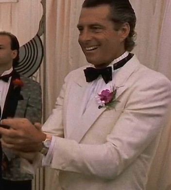

The Autumn Banquet
Bill of Fare
Eight plates from eight o’clock.
Tonight you eat what nobody else in the world can eat. Then you forget where you ate it.
Carmine Sabatini

Mr. Larry London, chef
Carmine’s amaro spritzI
Bitter amaro, prosecco and soda on ice, orange wheel.
Gourmet Club antipasto, all legalII
Salami, mortadella, provolone, red peppers, artichokes.
Little Italy fried calamariIII
Squid rings in a semolina crust, lemon and marinara.
Carmine Sabatini’s veal marsalaIV
Butter-seared scaloppine, mushrooms, marsala pan sauce.
Rosemary roast potatoesV
Crackling edges, garlic and sea salt.
The guest of honorVI
Imported. Very rare. Ask Mr. London, quietly.
Cannoli from Little ItalyVII
Vanilla ricotta, mini chocolate chips, pistachio ends.
Espresso and sambucaVIII
Three coffee beans in the glass, for luck.
NO ANIMALS WERE SERVED. Allegedly.
Arriving by train? Mind your bags.
No cameras, no film students. Form 1990.
No cameras, no film students. Form 1990.
DO NOT FEED
Live cargo.
Fingers to yourself.
Fingers to yourself.
TO: THE KITCHEN